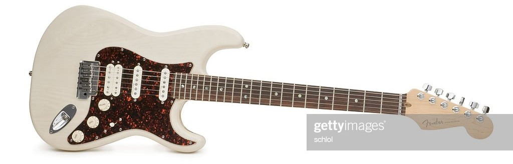

The archetypal Stratocaster is a solid-body electric guitar with a contoured asymmetric double-cutaway body with an extended upper horn; the body is usually made from alder or ash. The neck is usually made from maple and attached to the body with screws (often referred to as "bolts") and has a distinctive headstock with six tuning pegs mounted inline along a single side; the fingerboard may be maple or another wood, e.g. rosewood, and has at least twenty-one frets. The Stratocaster's body is front-routed for electronics, which are mounted in a plastic pickguard. Most Stratocasters have three single-coil pickups, a pickup selector switch, one volume control and two tone controls.
Bridges generally come in two designs: the more common pivoting "tremolo" bridges, and the less common "hardtail" fixed bridge. Both types of bridge have six individually adjustable saddles whose height and intonation can be set independently. Early models of the stratocaster came with a removable metal cover plate that fit over the bridge. The plate was purely cosmetic, and tended to get in the way of important playing techniques such as palm muting, so many players removed it. By the late 1970s, Fender stopped shipping guitars with the bridge cover plate, though some more modern reissue and custom shop models still have them. The innovative tremolo system is balanced by springs mounted in a rear cavity. The output jack is mounted in a recess in the front of the guitar body. Many different colors have been available. The Stratocaster's scale length is 25.5 inches (648 mm).